228 papers · 49 relevant · 5 highlighted
Every paper with at least one nonzero topic score, sorted by best-matching score. 🔥 marks scores ≥4/5. Click the title to jump to the full entry below; click [arXiv] to open the paper page. (secondary) marks papers from de-prioritized cond-mat archives.
analog quantum simulation 5/5 · 🔥 exotic spin models in light-matter 4/5 · 🔥 non-equilibrium dynamics 4/5 · entanglement & information structure 3/5 · QC/QI experiment 2/5 · non-equilibrium universality 2/5 · quantum measurements 2/5free-space correlated emission 5/5 · 🔥 Dicke superradiance 4/5 · 🔥 correlated / nonlocal dissipation 4/5 · methods for driven-dissipative 2/5 · non-equilibrium universality 2/5quantum optics experiment 5/5 · 🔥 QC/QI experiment 4/5 · interference shaping light 3/5 · entanglement & information structure 2/5 · quantum measurements 2/5spintronics-quantum-optics interface 5/5 · 🔥 entanglement & information structure 4/5 · Tavis-Cummings & cavity-many-emitter 2/5 · correlated / nonlocal dissipation 2/5QC/QI experiment 5/5 · 🔥 entanglement & information structure 4/5 · quantum measurements 2/5scars & prethermalization 5/5 · entanglement & information structure 3/5 · non-equilibrium dynamics 3/5measurement-induced transitions 4/5 · 🔥 quantum measurements 4/5 · driven-dissipative phase transition 3/5 · non-equilibrium universality 3/5 · Keldysh / 2PI / non-Gaussian methods 2/5 · entanglement & information structure 2/5 · methods for driven-dissipative 2/5 · non-equilibrium dynamics 2/5correlated cavity matter 4/5 · 🔥 entanglement & information structure 4/5 · Keldysh / 2PI / non-Gaussian methods 3/5 · spintronics-quantum-optics interface 3/5 · Tavis-Cummings & cavity-many-emitter 2/5 · analog quantum simulation 2/5 · correlated / nonlocal dissipation 2/5 · exotic spin models in light-matter 2/5non-equilibrium dynamics 4/5 · Kondo & dissipative impurity 3/5 · analog quantum simulation 3/5 · entanglement & information structure 3/5 · Keldysh / 2PI / non-Gaussian methods 2/5 · non-equilibrium universality 2/5non-equilibrium universality 4/5 · Tavis-Cummings & cavity-many-emitter 3/5 · non-equilibrium dynamics 3/5 · analog quantum simulation 2/5 · correlated cavity matter 2/5 · entanglement & information structure 2/5entanglement & information structure 4/5 · 🔥 non-equilibrium dynamics 4/5 · non-equilibrium universality 3/5 · scars & prethermalization 3/5methods for driven-dissipative 4/5 · driven-dissipative phase transition 3/5 · non-equilibrium dynamics 3/5 · correlated / nonlocal dissipation 2/5 · entanglement & information structure 2/5(secondary) — 🔥 quantum optics experiment 4/5 · correlated cavity matter 3/5 · QC/QI experiment 2/5 · Tavis-Cummings & cavity-many-emitter 2/5 · analog quantum simulation 2/5non-equilibrium dynamics 4/5 · methods for driven-dissipative 3/5 · Keldysh / 2PI / non-Gaussian methods 2/5 · driven-dissipative phase transition 2/5 · non-equilibrium universality 2/5correlated / nonlocal dissipation 4/5 · quantum measurements 3/5 · Tavis-Cummings & cavity-many-emitter 2/5 · entanglement & information structure 2/5 · methods for driven-dissipative 2/5Kondo & dissipative impurity 4/5 · 🔥 methods for driven-dissipative 4/5 · non-equilibrium dynamics 3/5 · Keldysh / 2PI / non-Gaussian methods 2/5non-equilibrium dynamics 4/5 · analog quantum simulation 3/5 · methods for driven-dissipative 3/5 · driven-dissipative phase transition 2/5QC/QI experiment 4/5 · 🔥 quantum optics experiment 4/5 · interference shaping light 2/5 · spintronics-quantum-optics interface 2/5quantum measurements 4/5 · correlated / nonlocal dissipation 2/5 · entanglement & information structure 2/5 · methods for driven-dissipative 2/5 · non-equilibrium dynamics 2/5correlated / nonlocal dissipation 4/5 · methods for driven-dissipative 3/5 · entanglement & information structure 2/5 · non-equilibrium dynamics 2/5non-equilibrium dynamics 4/5 · methods for driven-dissipative 3/5 · driven-dissipative phase transition 2/5 · entanglement & information structure 2/5entanglement & information structure 4/5 · 🔥 non-equilibrium dynamics 4/5 · driven-dissipative phase transition 2/5analog quantum simulation 4/5 · 🔥 non-equilibrium dynamics 4/5 · exotic spin models in light-matter 2/5(secondary) — 🔥 QC/QI experiment 4/5 · 🔥 quantum optics experiment 4/5 · interference shaping light 2/5non-equilibrium dynamics 4/5 · non-equilibrium universality 3/5 · Keldysh / 2PI / non-Gaussian methods 2/5correlated / nonlocal dissipation 4/5 · non-equilibrium dynamics 3/5 · methods for driven-dissipative 2/5entanglement & information structure 4/5 · non-equilibrium dynamics 3/5 · spintronics-quantum-optics interface 2/5quantum measurements 4/5 · methods for driven-dissipative 3/5 · non-equilibrium dynamics 2/5quantum optics experiment 4/5 · QC/QI experiment 3/5 · quantum measurements 2/5QC/QI experiment 4/5 · 🔥 quantum optics experiment 4/5entanglement & information structure 4/5 · methods for driven-dissipative 2/5 · quantum measurements 2/5quantum measurements 4/5 · entanglement & information structure 2/5 · non-equilibrium dynamics 1/5entanglement & information structure 4/5 · non-equilibrium dynamics 2/5QC/QI experiment 4/5 · spintronics-quantum-optics interface 2/5QC/QI experiment 4/5 · methods for driven-dissipative 2/5interference shaping light 4/5 · quantum measurements 2/5entanglement & information structure 4/5 · quantum measurements 2/5quantum measurements 4/5 · methods for driven-dissipative 2/5scars & prethermalization 4/5 · non-equilibrium dynamics 2/5interference shaping light 4/5 · non-equilibrium dynamics 2/5analog quantum simulation 4/5 · non-equilibrium dynamics 2/5QC/QI experiment 4/5 · quantum measurements 1/5QC/QI experiment 4/5 · quantum measurements 1/5methods for driven-dissipative 4/5QC/QI experiment 4/5QC/QI experiment 4/5QC/QI experiment 4/5QC/QI experiment 4/5entanglement & information structure 4/5Papers by authors on your watch list. Click the title to jump to the full entry below; click [arXiv] to open the paper page.
Papers from quant-ph and your primary cond-mat archives (quant-gas, stat-mech, str-el, dis-nn). Highlighted papers (⭐) come first, then everything else sorted by topic-relevance score, highest first.
← Index · ← Previous · Next →
Authors: Adam Rycerz
Type: theory · Category: other · PDF: https://arxiv.org/pdf/2604.23470v1
Analysis basis: full PDF text, analyzed in chunks
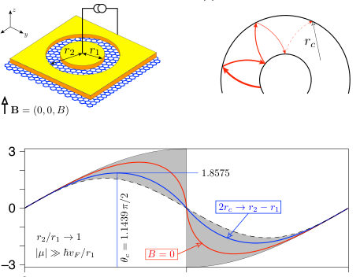
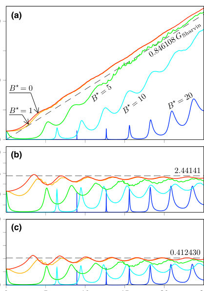
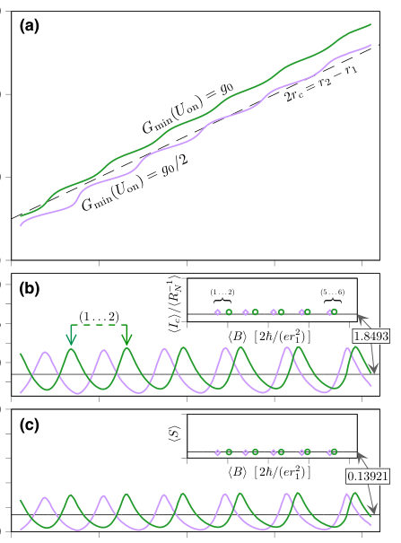
Main problem. Investigating the mesoscopic Josephson effect in a graphene Corbino disk under a perpendicular magnetic field, specifically looking for deviations from the standard tunneling-limit current-phase relation.
Main result. In the limit of vanishing conductance, the system exhibits an enhanced I_cR_N product (~1.85 Delta_0/e) and positive skewness (S ~ 0.14) compared to the standard tunneling limit.
Method. Quantum-mechanical mode-matching analysis using the Dirac-Bogoliubov-De-Gennes equation, compared against an incoherent scattering approximation.
Summary. This paper explores how the geometry and magnetic field of a graphene Corbino disk influence the Josephson effect. It demonstrates that even in the limit of very high resistance, the junction maintains mesoscopic features like an enhanced I_cR_N product and a skewed current-phase relation. The study provides a detailed comparison between exact quantum-mechanical calculations and simpler scattering models. These findings highlight the persistence of non-trivial transport properties in graphene-based superconducting junctions.
Model / system. A superconductor-graphene-superconductor (S-g-S) junction in a Corbino (disk) geometry, featuring an annular graphene sample with two circular superconducting electrodes.
Key observables. Critical current (I_c), normal-state resistance (R_N), current-phase relation (CPR), skewness (S), and conductance (G).
Important parameters / regimes. Magnetic field (B), chemical potential (mu), radii ratio (a), and the short-junction limit (junction width much smaller than coherence length).
Assumptions / limitations. Short-junction limit (width << coherence length); use of an incoherent scattering approximation for comparison; averaging datasets to mitigate Landau level resonance effects.
Figures summary. Fig 1 shows the Corbino geometry and the current-phase relation; Fig 2 displays conductance, I_cR_N, and skewness as functions of chemical potential; Fig 3 shows the relationship between chemical potential and magnetic field-induced resonances and compares averaged results to incoherent scattering predictions.
Paper structure. The paper introduces the Corbino geometry, presents the theoretical framework (DBdG equation), details the numerical mode-matching method, compares results with an incoherent scattering model, and analyzes the evolution of Josephson observables under varying magnetic fields and doping.
Unlike for tunneling Josephson junctions, for which the current-phase relation is given by the sine function, with the critical current ($I_c$) and normal-state resistance ($R_N$) following the relation $I_cR_N=(π/2)\,Δ_0/e$ (where $Δ_0$ is the superconducting gap and electron charge is $-e$), mesoscopic Josephson junctions show more complex current-phase relations, with the skewness $S>0$, what is related to the presence -- in case the leads are in the normal state -- of transmission probabilities taking the values comparable to $1$. Here, we show that these features also appear for a superconductor-graphene-superconductor (S-g-S) junction in the disk-shaped (Corbino) geometry, when the magnetic field is adjusted such that $I_c\rightarrow{}0$ and $R_N\rightarrow{}\infty$. In such a case, the product $I_cR_N\approx{}1.85\,Δ_0/e$, and the skewness $S\approx{}0.14$. The results obtained from quantum-mechanical mode-matching analysis for the Dirac-Bogoliubov-De-Gennes equation are compared with simpler model assuming incoherent scattering between two circular interfaces separating the sample and the leads.
Authors: Alistair H. Duff, J. E. Sipe
Type: theory · Category: other · PDF: https://arxiv.org/pdf/2604.23429v1
Analysis basis: full PDF text, analyzed in chunks
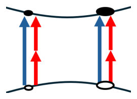
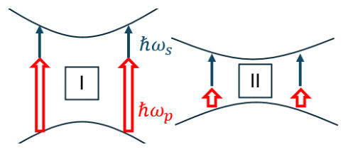
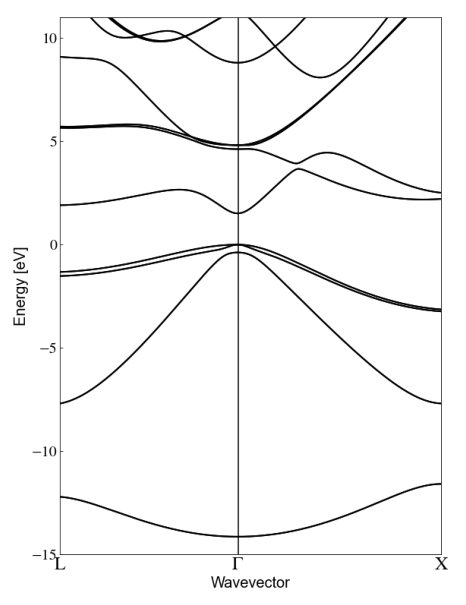
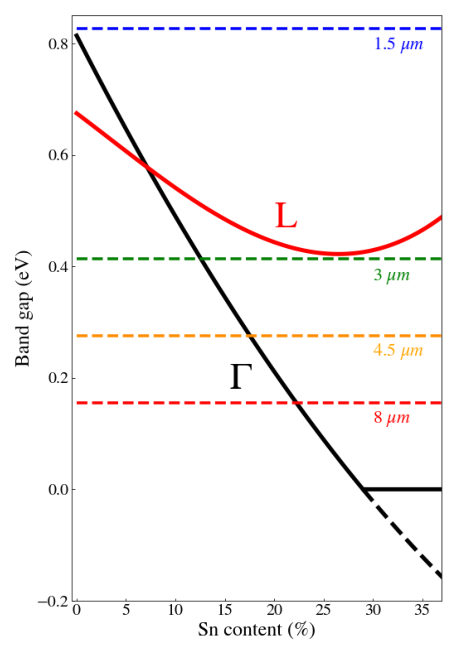
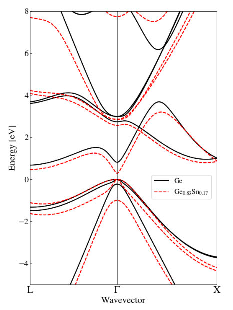
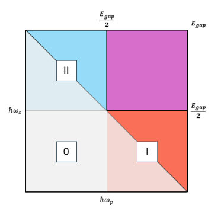
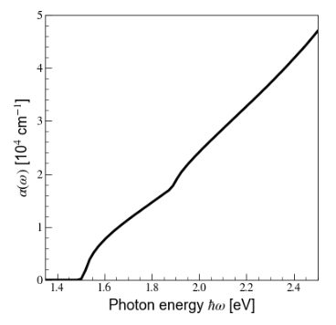
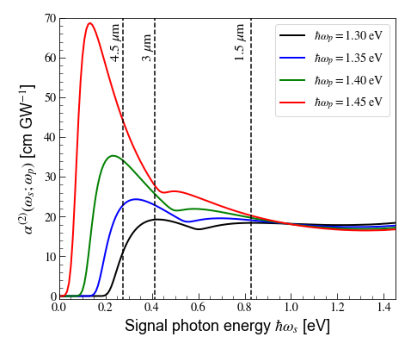
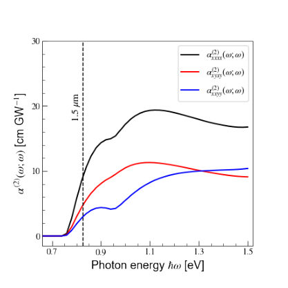
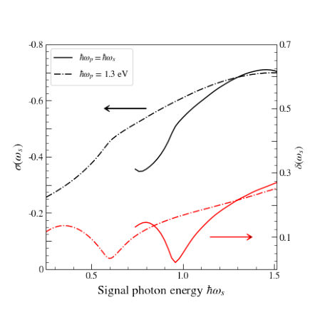
Main problem. Developing efficient mid-infrared (MIR) detection methods that avoid cryogenic temperatures by comparing two multi-photon absorption schemes using non-degenerate two-photon absorption (ND-2PA).
Main result. The study finds that Ge(1-x)Sn(x) alloys (Scheme II) exhibit a substantially larger nonlinear response and three-color injected current compared to GaAs (Scheme I) in the mid-infrared window.
Method. Theoretical calculations using first- and second-order time-dependent perturbation theory and a 30-band k.p model.
Summary. This paper investigates theoretical methods for detecting mid-infrared light using multi-photon processes in semiconductors. It compares a scheme using wide-gap GaAs to one using narrow-gap Germanium-Tin alloys. The researchers demonstrate that the GeSn-based approach provides much higher sensitivity and larger nonlinear current generation. This work is significant for developing room-temperature infrared detectors.
Model / system. The physical systems studied are bulk GaAs and Ge(1-x)Sn(x) alloys, modeled using a 30-band k.p Hamiltonian to account for the entire Brillouin zone and anisotropic nonlinear responses.
Key observables. Nonlinear absorption coefficient (alpha), three-color injected current response tensor, linear electric susceptibility, and anisotropy/dichroism parameters.
Important parameters / regimes. Photon energies (signal and pump), alloy composition (x), band gap energy, and pump intensities up to 1 TW/cm2.
Assumptions / limitations. Independent particle approximation, continuous wave limit, neglect of many-body effects, neglect of phonon-mediated indirect absorption, and neglect of local inversion symmetry breaking in GeSn alloys.
Figures summary. Figure 1 shows a schematic of current generation via interference between degenerate 2PA and 1PA; Figure 2 shows schematics of the two ND-2PA schemes (Scheme I and Scheme II).
Paper structure. The paper introduces the problem of MIR detection, defines two multi-photon schemes, details the 30-band k.p modeling approach, compares the nonlinear responses and current injection of GaAs and GeSn, and provides technical parameters for the alloys.
We calculate the theoretical non-degenerate two photon absorption and three color injected current response tensors for bulk GaAs and Ge$_{1-x}$Sn$_x$ for a range of alloy compositions. In particular, by including a ''pump'' beam we compare two ''schemes'' that are sensitive to mid-infrared photons. In ''scheme I'' we consider GaAs and a pump photon with energy greater than half the band gap, and in ''scheme II'' we consider Ge$_{1-x}$Sn$_x$ with a pump photon with energy less than half the band gap. We find that for certain pump and alloy concentrations Ge$_{1-x}$Sn$_x$ has a substantially larger nonlinear response and three-color injected current than GaAs in the mid-infrared frequency window where both materials can absorb photons via non-degenerate two-photon absorption.
Authors: Yiming Li, Katya Mikhailova, Lerato Takana, Daisy O'Mahoney, Sauviz P. Alaei, Guanxiong Qu, Dominic Petruzzi, Samuel Crossley, Harold Y. Hwang, Ian R. Fisher, Clare C. Yu, Yuri Suzuki
Type: experiment · Category: other · PDF: https://arxiv.org/pdf/2604.23943v1
Analysis basis: full PDF text, analyzed in chunks
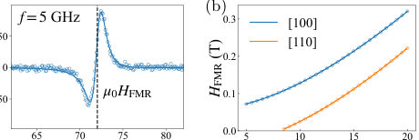
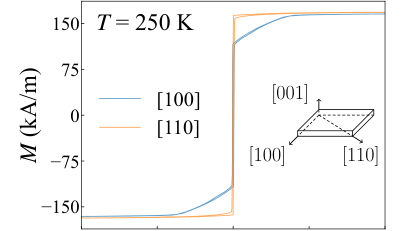
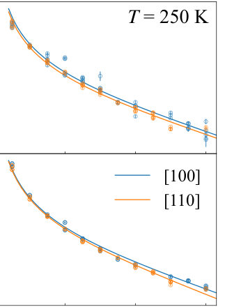
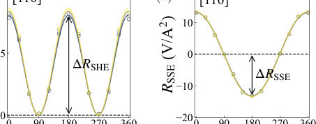
Main problem. The study aims to determine if the anisotropic magnon transport observed in magnesium aluminum ferrite (MAFO) is a general feature of spinel ferrites or if isotropic in-plane magnon propagation can be achieved for information transport.
Main result. The researchers found that epitaxial lithium aluminum ferrite (LAFO) thin films exhibit nearly isotropic magnon diffusion lengths along the [100] and [110] directions at 250 K, despite having pronounced fourfold in-plane magnetic anisotropy.
Method. Nonlocal transport measurements using platinum electrodes were used to detect electrically (Spin Hall Effect) and thermally (Spin Seebeck Effect) generated magnons, combined with SQUID magnetometry and broadband Ferromagnetic Resonance (FMR).
Summary. This paper investigates magnon transport in lithium aluminum ferrite (LAFO) thin films to address the need for low-loss, isotropic magnetic waveguides. While previous spinel ferrites showed anisotropic transport, LAFO demonstrates nearly identical magnon diffusion lengths along different in-plane directions. This isotropy is attributed to isotropic exchange stiffness and potential angular averaging. These findings suggest that LAFO is a promising platform for developing efficient, isotropic magnon-based information interconnects.
Model / system. The physical system consists of epitaxial (001) lithium aluminum ferrite (LAFO) thin films grown on MgAl2O4 substrates, characterized by a spinel structure with significant in-plane magnetic anisotropy.
Key observables. Magnon diffusion length (lambda), nonlocal resistance (R_SHE and R_SSE), saturation magnetization (Ms), anisotropy field (H4,parallel), and Gilbert damping (alpha).
Important parameters / regimes. Temperature of 250 K, magnetic field of 300 mT, and film thickness of approximately 12 nm.
Assumptions / limitations. The analysis assumes a 1D magnon diffusion model and attributes the observed isotropy to nearly isotropic exchange stiffness and effective angular averaging due to inhomogeneous broadening.
Figures summary. Fig 1 shows magnetization field dependence and hysteresis loops; Fig 2 shows FMR frequency dependence; Fig 3 demonstrates the angular dependence of nonlocal resistance (cos^2 and cos dependence).
Paper structure. The paper introduces the problem of magnon anisotropy, describes the growth and structural characterization of LAFO films, presents magnetic property measurements (SQUID and FMR), details the nonlocal transport experiments, and concludes with a discussion on the mechanism of isotropic transport.
Low-loss magnetic insulating thin films are promising for information transport via magnons, where isotropic in-plane magnon propagation is desirable. We report nonlocal measurements of electrically and thermally generated magnons in epitaxial (001) lithium aluminum ferrite Li$_{0.5}$Al$_{0.7}$Fe$_{1.8}$O$_4$ thin films with pronounced fourfold in-plane magnetic anisotropy. By measuring the inverse spin Hall signal as a function of the magnon diffusion distance, we deduce magnon diffusion lengths that are nearly identical along the [100] and [110] directions at 250~K. This isotropy is consistent with a nearly isotropic exchange stiffness. These results highlight spinel ferrites as viable platforms for isotropic magnon transport.
Authors: Kota Otsuka, Kazuki Yokomizo
Type: theory · Category: other · PDF: https://arxiv.org/pdf/2604.24284v1
Analysis basis: full PDF text, analyzed in chunks
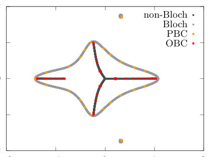
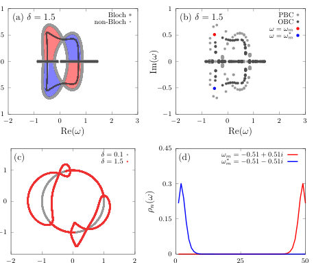
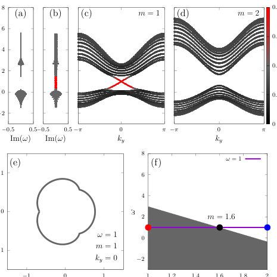
Main problem. The breakdown of conventional Bloch band theory and topological characterization in nonlinear eigenvalue problems due to extreme sensitivity to boundary conditions.
Main result. The establishment of a non-Bloch band theory framework that uses Generalized Brillouin Zones (GBZs) to accurately reproduce open boundary condition spectra and predict topological edge states in nonlinear systems.
Method. Development of a non-Bloch framework using complex-valued Bloch wavenumbers and the construction of Generalized Brillouin Zones (GBZs) via the characteristic equation of the nonlinear system.
Summary. This paper introduces a non-Bloch band theory specifically designed for nonlinear eigenvalue problems. It addresses the failure of standard Bloch theory in systems where parameters depend on the eigenvalue, which typically causes a discrepancy between periodic and open boundary spectra. By using Generalized Brillouin Zones, the authors can accurately predict the spectra and the emergence of the nonlinear skin effect. The framework is successfully extended to 2D to establish a bulk-boundary correspondence for nonlinear Chern insulators.
Model / system. 1D and 2D tight-binding models featuring nonlinear eigenvalue equations where system parameters depend on the eigenvalue, including nonreciprocal hopping models and nonlinear Chern insulators.
Key observables. Complex eigenvalue spectra, winding numbers, Chern numbers, and the biorthogonal inverse participation ratio (bi-IPR).
Important parameters / regimes. Nonreciprocity strength (tL/tR, gamma_x), nonlinearity strength (delta), and mass parameter (m).
Assumptions / limitations. The nonlinearity follows specific analytical forms (e.g., f(omega) = omega or -omega^2), and the 2D extension assumes mirror symmetry to suppress skin effects in one direction.
Figures summary. Fig 1 compares Bloch vs. non-Bloch bands and PBC vs. OBC spectra; Fig 3 shows the reproduction of bulk and edge spectra in 2D, the disappearance of edge states, and the calculation of Chern number transitions.
Paper structure. The paper introduces the problem of nonlinear eigenvalue sensitivity, develops the 1D non-Bloch framework and GBZ construction, investigates the nonlinearity-induced skin effect and pseudo-Hermiticity, and extends the theory to 2D topological Chern insulators.
Why it may be interesting. This work provides a critical theoretical tool for understanding nonlinear dynamics in optics, mechanical oscillators, and weakly interacting bosonic systems where boundary-induced spectral shifts are prevalent.
Nonlinear eigenvalue problems arise in a wide range of physical systems, in which system parameters depend on the eigenvalue. Such systems have been proposed to exhibit an extreme sensitivity of their spectra to boundary conditions, which leads to the breakdown of conventional topological characterizations. In this work, we establish a non-Bloch framework for calculating continuum bands that reproduce the spectra of the nonlinear system with open boundary conditions. This non-Bloch band theory enables us not only to calculate the eigenvalues but also to reveal phenomena unique to the nonlinear system. We further investigate the topological bulk-boundary correspondence in a nonlinear Chern insulator within an extended version of this framework.
Authors: Grayson R. Frazier, Colton Lelievre, Yi Li
Type: theory · Category: strongly correlated electrons · PDF: https://arxiv.org/pdf/2604.24734v1
Analysis basis: full PDF text, analyzed in chunks
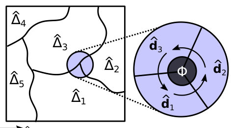
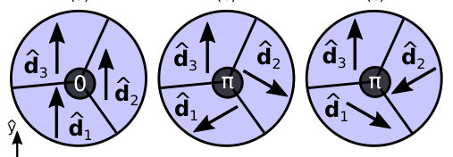
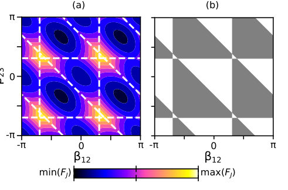
Main problem. Investigating how anisotropic Josephson coupling between spin-triplet Cooper pairs in a junction network leads to frustrated d-vector textures and spontaneous nonintegral flux trapping.
Main result. The authors identify a critical coupling strength D* = |J0|/sqrt(3) above which the system enters a frustrated regime characterized by chiral 120-degree d-vector textures and the spontaneous trapping of pi-flux.
Method. The study uses a theoretical framework involving the minimization of the Josephson free energy and the analytical derivation of an emergent geometric phase arising from d-vector orientations.
Summary. This paper explores how the internal spin structure of triplet superconductors can induce frustration in Josephson junction networks. By analyzing the competition between different types of anisotropic coupling, the authors show that a transition occurs to a state with chiral d-vector textures. This transition leads to the spontaneous trapping of fractional (pi) magnetic flux. The findings suggest new ways to engineer frustrated superconducting states using magnetic textures.
Model / system. A Josephson junction network of superconducting grains (such as polycrystals or single-crystal networks) with spin-triplet pairing, modeled via a three-grain ring with Heisenberg-like and Dzyaloshinskii-Moriya-type interactions.
Key observables. Nonintegral/fractional flux trapping (specifically pi-flux), spontaneous Josephson currents, and chiral d-vector textures.
Important parameters / regimes. Anisotropic coupling amplitudes (J0, D0, Gamma), the dimensionless ratio x = D0/J0, and the critical value D* = |J0|/sqrt(3).
Assumptions / limitations. The analysis assumes unitary triplet pairing (d x d* = 0) and neglects the self-inductance of the network.
Figures summary. Figure 1 provides a schematic of a Josephson junction network illustrating superconducting grains, d-vector orientations, and a three-grain ring demonstrating flux trapping.
Paper structure. The paper introduces the problem of flux trapping in triplet networks, defines the Hamiltonian and coupling terms, performs an analytical derivation of the critical coupling regime, compares the results to half-quantum vortices, and discusses experimental candidates and implications for glassy phases.
In a Josephson junction network, anisotropic coupling between spin triplet pairing correlations can lead to frustrated $d$ vector textures that support spontaneous Josephson currents and nonintegral flux trapping. Such networks can appear in superconducting polycrystals, as well as single-crystal superconductors. In analogy to classical spin systems, in which the presence of geometric frustration and anisotropic superexchange can lead to nontrivial spin textures, Josephson networks with anisotropic Josephson couplings cannot simultaneously optimize their $\mathrm{U}(1)$ superconducting phase difference and relative $d$ vector orientations. The internal pairing structure of Cooper pairs twists as they tunnel across the Josephson junction, and the $d$ vector texture enters as an emergent geometric phase which can spontaneously trap fractional flux. For unitary triplet pairing order, this mechanism can support $π$-flux trapping above a critical value of antisymmetric Josephson coupling, and is distinct from usual half-quantum vortices. The results of this work reveal new routes to engineer frustrated Josephson networks from the interplay of magnetic textures and spin triplet superconducting pairing order.
Authors: HM Borhanul Alam, Dipak Oli, You Qiang, Bisheswor Acharya, Jesse Huso, Matthew D. McCluskey, Leah Bergman
Type: experiment · Category: disordered systems and neural networks · PDF: https://arxiv.org/pdf/2604.23884v1
Analysis basis: full PDF text, analyzed in chunks
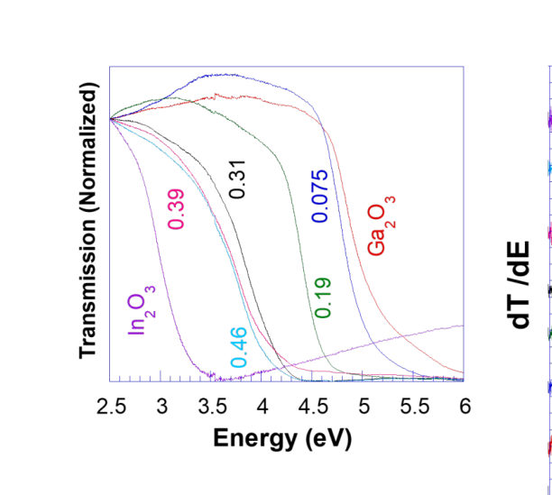
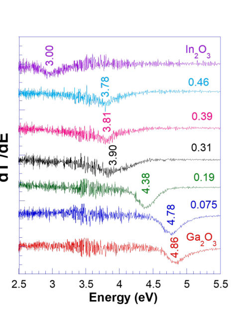
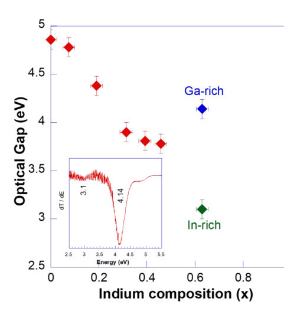
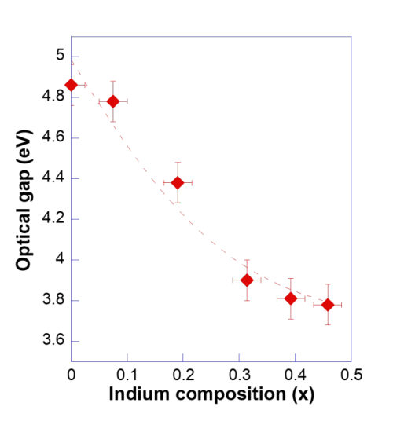
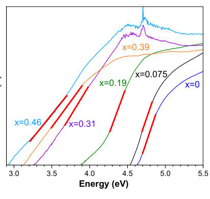
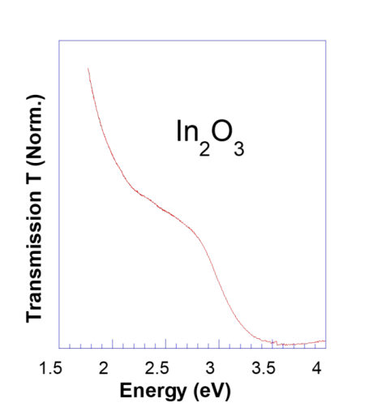
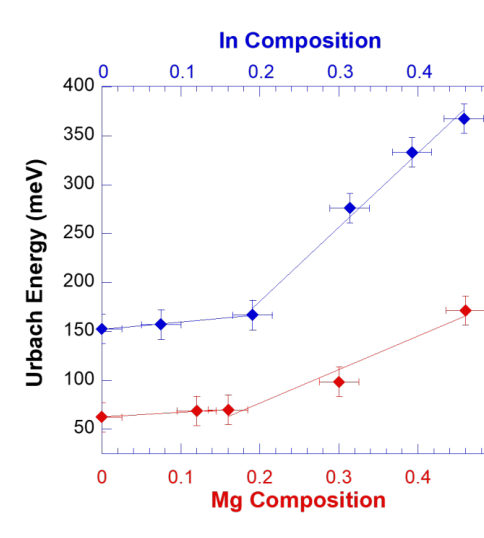
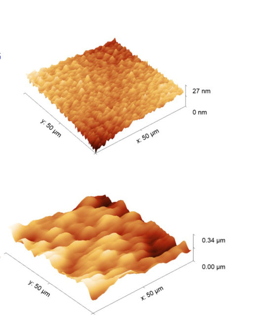
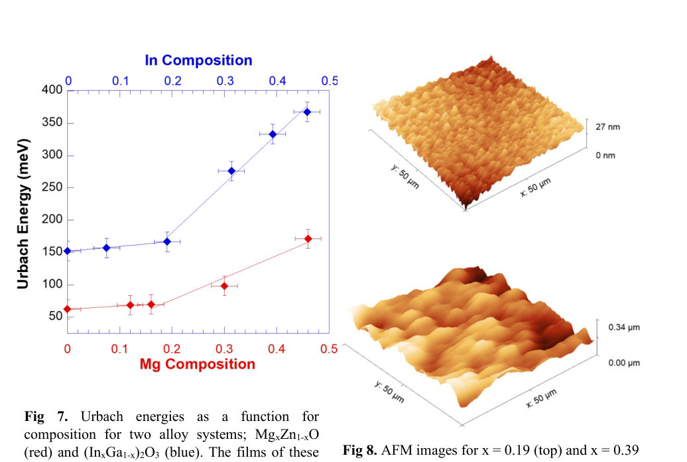
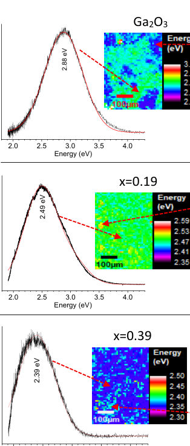
Main problem. Investigating the tunable optical properties and the onset of phase separation in (InxGa1-x)2O3 microcrystalline alloy films.
Main result. The study identifies the onset of incipient phase separation at x ~ 0.3, where phase-segregated precipitates act as a major defect type, and finds that large Urbach energies are driven by strong hole-phonon coupling.
Method. Wet chemical synthesis followed by UV-Vis transmission spectroscopy, spatial photoluminescence mapping, AFM, and EDS analysis.
Summary. This paper explores how changing the indium content in (InxGa1-x)2O3 films tunes their optical properties from the deep-UV to the visible spectrum. The researchers discovered that at a composition of x ~ 0.3, the material begins to undergo phase separation, creating defects that significantly impact the optical properties. They also found that the material exhibits much larger Urbach energies than similar alloy systems due to strong coupling between holes and phonons. This work is important for designing transparent conducting oxides and wide-bandgap semiconductors.
Model / system. Microcrystalline (InxGa1-x)2O3 alloy films ranging from beta-Ga2O3 to In2O3, characterized using a saturation model for the optical gap and an Urbach model for absorption band tails.
Key observables. Optical gap (E_OG), Urbach energy (E_u), self-trapped hole (STH) photoluminescence emission, and compositional-dependent absorption tails.
Important parameters / regimes. Indium composition (x), solubility limit/saturation composition (x0 ~ 0.3), and hole-phonon coupling strength.
Assumptions / limitations. The use of a tanh-based saturation model to identify the onset of phase separation.
Figures summary. Figure 1 shows normalized transmission spectra; Figure 3 and 5 include transmission spectra showing absorption features and the In2O3 optical gap.
Paper structure. The paper introduces the alloy system, describes the synthesis and characterization methods, presents the compositional dependence of the optical gap and STH PL, analyzes phase separation via saturation modeling, compares Urbach energies with the MgxZn1-xO system, and concludes with the impact of hole-phonon coupling.
The tailored optical properties of $(In_xGa_{1-x})_2O_3$ microcrystalline films were studied as a function of composition x via transmission, Urbach energy analysis, and spatial photoluminescence (PL) mapping of the self-trapped hole (STH) emission, with the objective of addressing material characteristics specific to this alloy system. Up to x = 0.46, the optical gap exhibited a redshift of 1 eV from the deep to the near-UV range, while the STH PL was redshifted by 0.5 eV in the visible range. For higher composition, x = 0.63, the transmission spectra indicated the co-existence of two optical gaps attributed to Ga-rich and to In-rich domains, implying that this sample is phase-separated. However, the saturation behavior of the optical gap and that of the STH PL showed that incipient phase separation occurs at a lower composition: x ~ 0.3. This is consistent with the compositional trend found for Urbach energy, implying that phase segregation in the alloys is a major defect even at its incipient stages. Additionally, Urbach analysis of $(In_xGa_{1-x})_2O_3$ was compared to that of $Mg_xZn_{1-x}O$. Both systems were found to have similar compositional dependence: at lower range, Urbach energies exhibited a negligible increase, while at the higher range a significant dependence on the composition was found. The main difference between the two alloy systems is in their Urbach energy: those for $(In_xGa_{1-x})_2O_3$ were significantly larger than those of $Mg_xZn_{1-x}O$. This stems from the strong hole coupling to phonons of $(In_xGa_{1-x})_2O_3$, which provides a dynamic transition additionally to that of defect-type.
Authors: Alexey Kabalnov
Type: theory · Category: statistical mechanics · PDF: https://arxiv.org/pdf/2604.23850v1
Analysis basis: full PDF text, analyzed in chunks
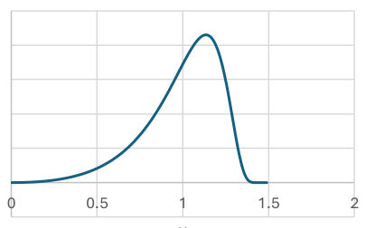
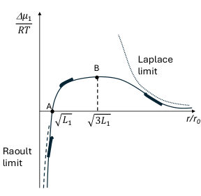
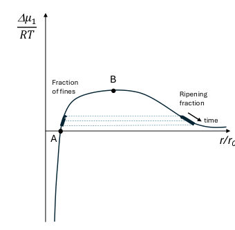
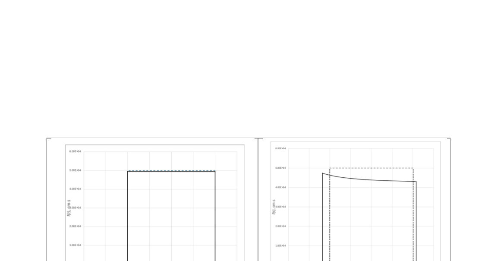
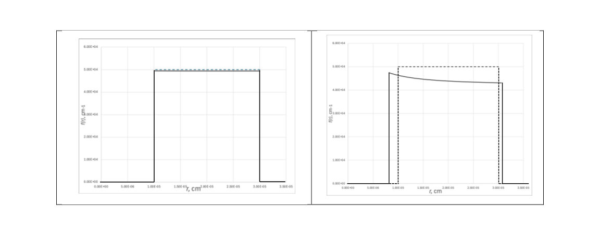
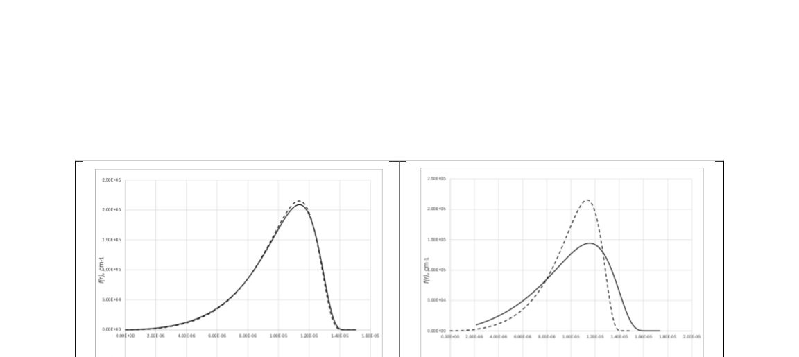
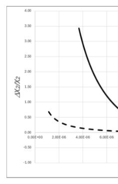
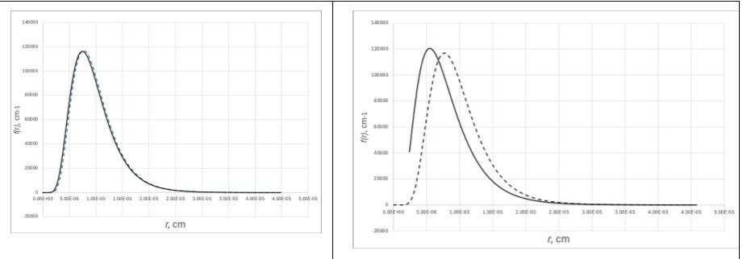
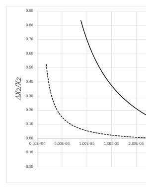
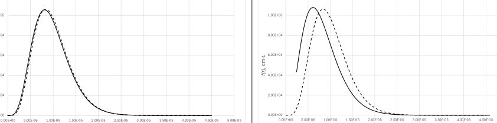
Main problem. The paper investigates how the addition of a sparingly soluble component affects the kinetics and particle size distribution of Ostwald ripening in dispersed systems.
Main result. The author derives a generalized growth law that accounts for molar volume differences and non-ideality, showing that high concentrations of the additive follow classical LSW theory while low concentrations lead to bimodal distributions.
Method. The study uses an extension of the Lifshits-Slezov-Wagner (LSW) theory, employing mass flux analysis, the Kelvin equation, and numerical simulations of particle size evolution.
Summary. This paper extends the classical LSW theory of Ostwald ripening to systems containing a sparingly soluble additive. It demonstrates that at high additive concentrations, the system maintains classical cubic growth and distribution patterns, but at low concentrations, the distribution splits into a bimodal pattern consisting of 'fines' and ripening particles. The author provides a new mathematical framework to account for non-ideal solution behavior and differences in molar volumes, offering practical insights for stabilizing emulsions.
Model / system. A two-component dispersed phase (e.g., oil-in-water emulsions) consisting of spherical liquid drops in a medium, where the second component is sparingly soluble.
Key observables. Particle size distribution (PSD), ripening rate (cubic law), critical radius, and the lock-in number.
Important parameters / regimes. Lock-in number (L1), molar fraction of the second component (x2,0), interfacial tension, and molar volume differences.
Assumptions / limitations. Quasi-steady-state mode, negligible solubility of the medium in the dispersed phase, and small-scale expansion of the Kelvin equation.
Figures summary. Figure 1 shows the LSW particle size distribution attractor; Figure 2 illustrates chemical potential vs. particle size regimes; Figure 3 shows the evolution of bimodal distributions; Figures 4-11 show the evolution of various initial distributions (uniform, log-normal, gamma) toward the lock-in state.
Paper structure. The paper revisits and extends a previous model, establishes the applicability of LSW theory in high-concentration regimes, derives an improved extrapolatory equation for ripening rates, analyzes the transition to bimodal distributions at low concentrations, and concludes with practical stabilization strategies.
Additives of sparingly soluble components are known to slow down or completely inhibit Ostwald ripening in dispersed systems. In this paper, our earlier model of stabilization against Ostwald ripening is revisited and extended. In a quasi-steady-state mode, the process is shown to be controlled by the diffusion of the less soluble component, and the whole machinery of the classical Lifshits-Slezov-Wagner (LSW) theory can be leveraged almost without any change. The particle size distribution is predicted to follow the same distribution function pattern as in the classic LSW theory. The rate of ripening follows the classic cubic law. To extend our earlier result, an improved extrapolatory equation for the ripening rate is derived, that covers the whole formulation range, accounts for the difference in molar volumes of the components and for the solution non-ideality. The behavior described above is observed over the range of high concentrations of the poorly soluble component, with the cutoff determined by the lock-in number described in the previous paper of this series. When the concentration of the additive is low, the kinetics no longer follows the LSW pattern; instead, the particle size distribution becomes bimodal, with the fraction of 'fines' enriched by the poorly soluble component and the fraction of the large particles to ripen as if no additive were present. The lock-in parameter L1 can be used to characterize for the transition from one mode to another. In the end, some practical stabilization approaches for emulsions are discussed.
Authors: Pai Li, Ziao Tian, ZengFeng Di, Feng Ding
Type: theory · Category: statistical mechanics · PDF: https://arxiv.org/pdf/2604.24209v1
Analysis basis: full PDF text, analyzed in chunks
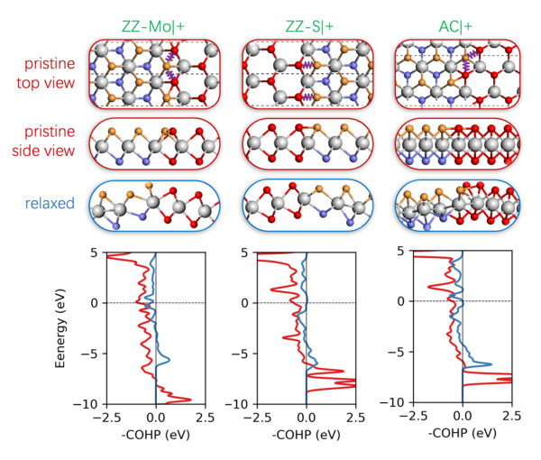
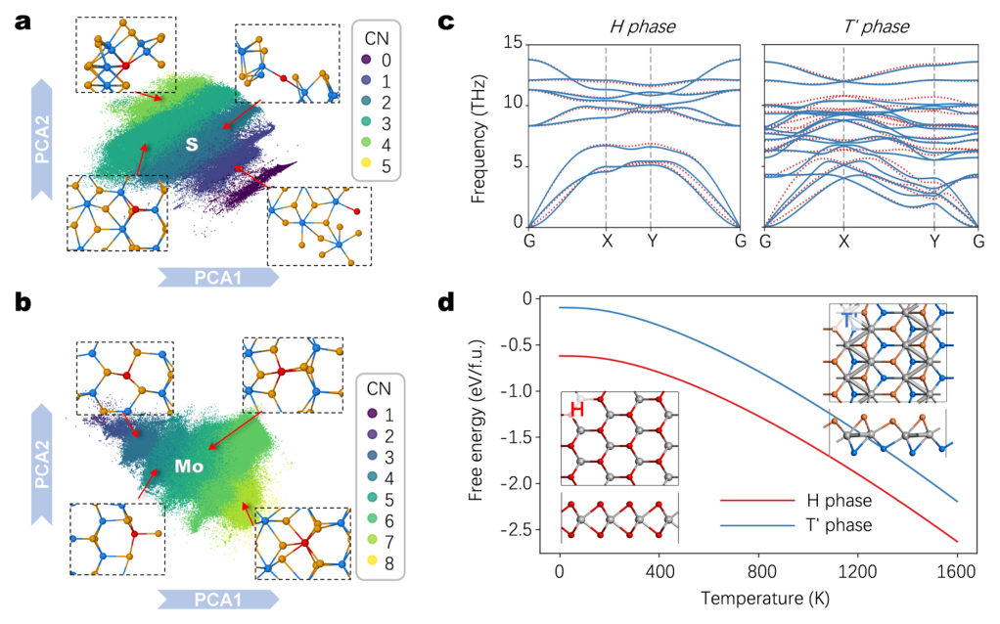
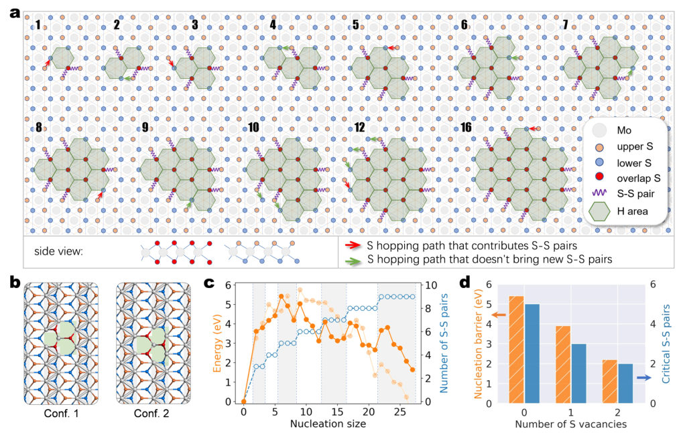
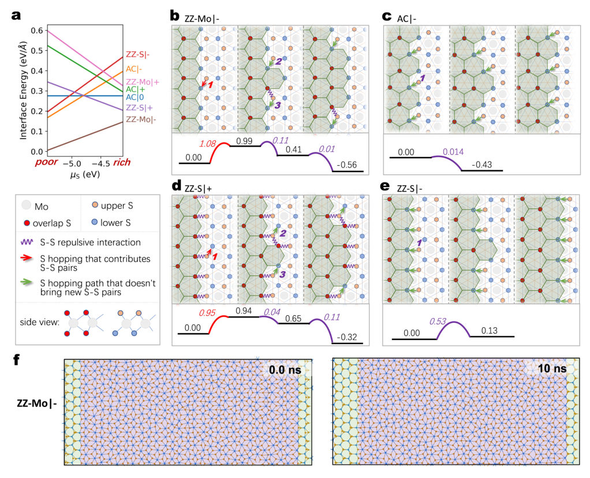
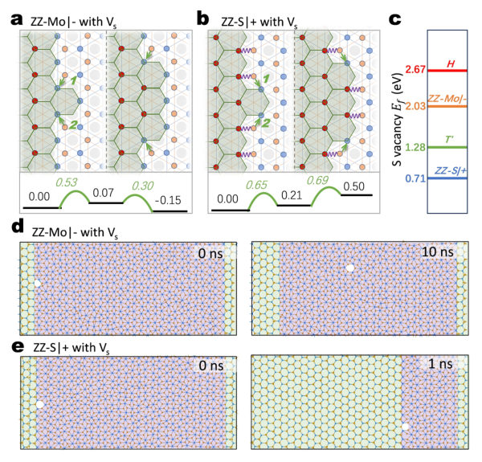
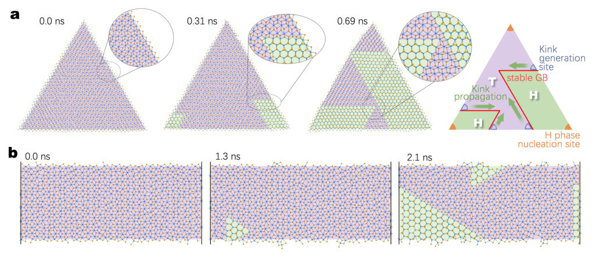
Main problem. Understanding the kinetic arrest of the metastable T' phase in monolayer MoS2 and determining why it persists despite a strong thermodynamic driving force toward the stable H phase.
Main result. The phase transformation is kinetically hindered by repulsive S-S interactions at grain boundaries that create high energy barriers for kink generation. The study also reveals that sulfur vacancies fail to accelerate transformation at the most stable interface because they are thermodynamically unstable there and migrate away.
Method. The researchers used machine learning-accelerated molecular dynamics (via DeepMD-kit) and first-principles DFT calculations to study nucleation and interface propagation.
Summary. This paper investigates why the metastable T' phase in MoS2 persists despite thermodynamic pressure to transform into the H phase. By using machine learning-accelerated molecular dynamics, the authors show that repulsive interactions between sulfur atoms at grain boundaries create significant energy barriers. They demonstrate that while defects can sometimes help, sulfur vacancies actually migrate away from the most stable interfaces, failing to catalyze the transition. This work provides a new paradigm for controlling phase transitions in 2D materials through interface-specific design.
Model / system. The physical system is monolayer MoS2, specifically focusing on the phase transition between the metastable metallic T' phase and the stable semiconducting H phase, including various grain boundary configurations (ZZ and AC) and the role of sulfur vacancies.
Key observables. Nucleation barriers, S-S pair counts, interface propagation velocity, kink density, and vacancy formation energies.
Important parameters / regimes. The system operates in a low-density kink regime (Nk << L/a) where the rate-limiting step is kink generation rather than migration; S-S distance and COHP-derived antibonding character are critical.
Assumptions / limitations. The kinetic modeling of interface propagation assumes steady-state conditions and a low-density limit of kinks where kink-kink interactions are negligible.
Figures summary. Fig 1: DFT analysis of S-S repulsion and COHP curves; Fig 2: MLFF training details; Fig 3: Energy profiles of nucleation pathways and the effect of vacancies; Fig 4: Analysis of H-T' interface propagation and energy barriers for different grain boundaries.
Paper structure. The paper begins with a DFT-based investigation of atomic-scale S-S repulsion, moves to the development and validation of a machine learning force field, presents large-scale MD simulations of nucleation and growth, and concludes with a kinetic model of interface propagation and the role of defects.
The metastable T' phase in monolayer MoS2 exhibits remarkable persistence despite a strong thermodynamic driving force toward the stable H phase. Using machine learning-accelerated molecular dynamics and first-principles calculations, we reveal that this kinetic arrest originates from repulsive S-S interactions, which impose high energy barriers during both nucleation and grain boundary propagation. While sulfur vacancies can alleviate these barriers in certain interfaces, they fail to accelerate transformation at the most stable interface, ZZ-Mo|-, due to their thermodynamic instability there. Instead, vacancies migrate into the T' phase, leaving the advancing front defect-free. Direct simulations of nanostructures confirm that H-phase nucleation initiates at corners or edges, and all observed growth fronts adopt the ZZ-Mo|- configuration, consistent with its low interfacial energy but slow kinetics. Our work establishes that phase transformation in 2D materials is governed not by global defect concentration, but by the local compatibility between defects and moving interfaces, offering a new paradigm for controlling structural transitions through interface-specific design.
Authors: Ananth Dodabalapur, Chankeun Yoon, Xiao Wang
Type: both · Category: disordered systems and neural networks · PDF: https://arxiv.org/pdf/2604.24641v1
Analysis basis: full PDF text, analyzed in chunks
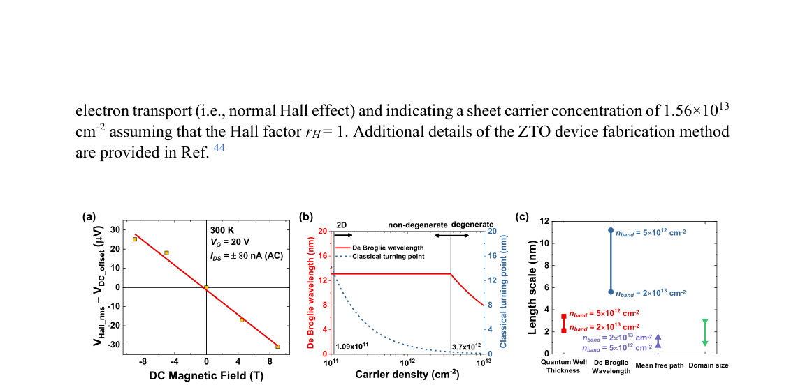
Main problem. The paper seeks to establish a consistent physical basis for charge transport and dimensionality in amorphous oxide semiconductor (AOS) FETs, addressing uncertainties regarding the role of crystalline order, high trap density, and the validity of band transport models in nominally amorphous materials.
Main result. The authors demonstrate that high-mobility AOS FETs are best described by a trap-influenced band transport model in a quasi-2D channel, supported by evidence of nanoscale crystalline domains and delocalized carrier transport.
Method. The study combines structural analysis (FEM, TEM, STEM) with electronic transport measurements (Hall effect, carrier velocity) and theoretical modeling (Schrödinger-Poisson analysis, MTR and percolation models).
Summary. This paper provides a conceptual framework to justify using band-transport models in amorphous oxide semiconductors. By analyzing structural and electronic data, the authors show that despite the amorphous nature, the presence of nanoscale crystalline domains and high carrier mobilities allow for a quasi-2D band transport description. The work reconciles the Multiple Trapping and Release (MTR) model with percolation effects caused by spatial disorder. This is crucial for the accurate design and scaling of advanced AOS-based transistors.
Model / system. The system consists of Amorphous Oxide Semiconductor (AOS) FETs, such as IGZO and ZTO. The transport is modeled using an extended Multiple Trapping and Release (MTR) framework combined with percolation theory to account for spatial inhomogeneities.
Key observables. Carrier mobility, carrier density, Hall voltage, carrier velocity, mean free path, and subband energies.
Important parameters / regimes. Effective mass (m*), De Broglie wavelength, nanocrystalline domain size (1-5 nm), mean free path (> 1 nm), and the metal-insulator transition threshold (e^2/h).
Assumptions / limitations. Use of effective medium approximation, parabolic band assumption, and the assumption that the accumulation layer can be treated as a quasi-2D system.
Figures summary. Figure 1 shows crystalline domain sizes and the relationship between De Broglie wavelength and carrier density; Figure 2 displays the Density of States and Fermi level positions; Figure 3 plots the temperature dependence of various scattering mechanisms and mobility; Figure 4 illustrates the impact of spatial non-uniformity and velocity saturation.
Paper structure. The paper begins by defining the problem of transport interpretation in AOS, moves to structural evidence of nanocrystalline domains, presents electronic evidence for band transport and 2D confinement, develops a mathematical framework for MTR and percolation, and concludes by integrating these models to describe high-field transport.
A consistent and widely accepted physical basis for interpretation of charge transport in amorphous oxide semiconductor (AOS) field-effect transistors (FETs), and more generally device physics, has been hampered by uncertainties in crystalline order, dimensionality, and the effects of a significant density of traps. The overarching theme of this paper is to build and justify a much-needed conceptual framework for describing advanced AOS transistors, particularly those with very small channel lengths. Combining new work and selecting prior research results on charge transport and device physics together with literature reports from various groups on morphology, physical properties, electronic structure and percolation effects, the main evidence that is available in support of a trap-influenced band transport picture in quasi-2-dimensional channels in high mobility AOS FETs is presented.
Authors: Giampiero Lovat
Type: theory · Category: other · PDF: https://arxiv.org/pdf/2604.23254v1
Analysis basis: full PDF text, analyzed in chunks
Main problem. The paper investigates the transient electromagnetic field signatures of the Zenneck wave excited by a pulsed vertical electric dipole over a lossy half-space, addressing whether the Zenneck wave is a physical phenomenon or a mathematical artifact.
Main result. The study identifies a specific modal contribution that acts as a time-domain footprint of the Zenneck wave, exhibiting waveform invariance in reduced time and spatial attenuation consistent with a surface wave.
Method. The author employs the Double-Deformation Technique (DDT), involving successive contour deformations in both the transverse-wavenumber and frequency planes, to decompose the field into source-pole, loss-pole, modal-pole, and residual contributions.
Summary. This paper provides a rigorous mathematical framework to identify the Zenneck wave in the time domain. By using a double-deformation technique, the author decomposes the electromagnetic field into distinct physical components, proving that a specific modal contribution represents the Zenneck wave. The study shows that this wave can dominate the field during a finite late-time interval and exhibits characteristic spatial attenuation. This work helps resolve long-standing debates regarding the physical reality of the Zenneck wave in pulsed excitation scenarios.
Model / system. A vertical electric dipole (VED) is located at the interface between free space and a lossy, homogeneous, isotropic half-space characterized by complex permittivity.
Key observables. The transient azimuthal magnetic field (h_phi) and the radiated TM-polarized field.
Important parameters / regimes. Relative permittivity (epsilon_r), conductivity (sigma), central frequency (f0), spectral damping (alpha_0), and observation distance (rho).
Assumptions / limitations. The source is a causal, damped-sinusoidal pulsed current; the media are homogeneous and isotropic; the analysis assumes the validity of the Sommerfeld representation.
Figures summary. Figures illustrate the physical geometry, the complex integration paths for wavenumber and frequency deformations, the decomposition of field contributions, dispersion curves, and the validation of the DDT method against standard inverse transforms.
Paper structure. The paper begins with the physical model and geometry, moves to the mathematical derivation using the double-deformation technique, presents the field decomposition and validation, analyzes temporal and spatial regimes (including waveform invariance and attenuation), and concludes with asymptotic analysis of the late-time tail.
We investigate the transient electromagnetic field radiated by a pulsed vertical electric dipole above a lossy half-space and identify its time-domain signatures associated with the Zenneck wave. Starting from the classical Sommerfeld representation, we derive a causal time-domain formulation based on the double-deformation technique, with successive contour deformations in the transverse-wavenumber and frequency planes. This yields an explicit decomposition of the field into source-pole, loss-pole, modal-pole, and residual steepest-descent contributions. The resulting expressions exactly satisfy causality and are validated against a reference solution obtained through a standard double inverse transform. The analysis shows that one modal contribution, generated by the frequency-plane deformation and related to the frequency-domain Zenneck pole, exhibits reduced-time invariance and a spatial attenuation consistent with a surface-wave component. Under suitable source and observation conditions, this term can dominate the field over a broad and physically relevant finite late-time interval. At the same time, for the considered damped-sinusoidal excitation, the strict asymptotic tail at fixed distance remains algebraic of order $t^{-5/2}$, with contributions from both the residual continuous spectrum and the modal-pole family. These results provide a rigorous and physically interpretable time-domain manifestation of the frequency-domain Zenneck wave in the pulsed half-space problem.
Authors: Satyagni Bhattacharya, Debdatta Dey, Samyak Jain, Yassir Khan, Tirthankar Mazumder, Aryaman Mihir Seth, Nikhil Mogalapalli, Divyansh Tiwari, Pravallika Vemparala, Rickmoy Samanta
Type: theory · Category: other · PDF: https://arxiv.org/pdf/2604.23868v1
Analysis basis: full PDF text, analyzed in chunks
Main problem. The paper investigates how the Saffman crossover (the transition from near-field to far-field hydrodynamic flow) reorganizes the interaction and phase-space structure of quenched force-dipole pairs in viscous membranes.
Main result. The Saffman crossover induces a transition from effectively 1D dynamics (where angular mismatch is conserved) to 2D dynamics (with coupled radial and angular evolution), leading to a universal cubic collapse law for pullers in the far-field.
Method. The authors use an analytical approach involving 2D Fourier transforms, derivation of the membrane Green's function, and asymptotic analysis of the resulting hydrodynamic equations within a Hamiltonian framework.
Summary. This paper explores how hydrodynamic screening in fluid membranes changes the way active particles interact. It shows that the Saffman crossover fundamentally changes the nature of the interaction from a simple 1D-like radial motion to a complex 2D coupled motion. For 'puller' type particles, this leads to a predictable, universal way that particles aggregate over time. This work provides a minimal mathematical framework for understanding how momentum leakage into a surrounding fluid can reorganize the dynamics of embedded inclusions.
Model / system. A 2D incompressible, viscous membrane coupled to an infinite 3D surrounding fluid, containing two identical, orientation-fixed (quenched) force-dipoles (either pullers or pushers).
Key observables. Velocity fields, vorticity fields, relative separation (R), angular evolution (psi), and the scaling of the collapse time (tc).
Important parameters / regimes. Saffman length (lambda), dipole strength (sigma), membrane viscosity (eta_s), and the distinction between pullers (sigma > 0) and pushers (sigma < 0).
Assumptions / limitations. Flat membrane geometry, infinite subphase, low Reynolds number (Stokes flow), incompressible 2D flow, and fixed dipole orientations.
Figures summary. Figure 1 visualizes the velocity fields of a single puller dipole, comparing the purely radial near-field flow to the rotational far-field flow. Figure 2 provides a schematic of the two-dipole system and their relative coordinates.
Paper structure. The paper introduces the physical problem of dipolar interactions, derives the hydrodynamic Green's function for the membrane, analyzes the near-field and far-field asymptotic regimes, constructs a Hamiltonian description of the two-body problem, and concludes with the derivation of universal scaling laws for particle aggregation.
We investigate an analytic theory of force-dipole hydrodynamics in a viscous membrane coupled to an infinite surrounding fluid, focusing on quenched (orientation-fixed) dipoles. While the single-dipole flow exhibits the known Saffman crossover from a near-field \(v\sim r^{-1}\) to a screened far-field \(v\sim r^{-2}\), we show that this crossover induces a qualitatively new reorganization of dipole--dipole interactions. For two identical quenched dipoles, the near-field dynamics is exactly solvable and effectively one-dimensional, with a fixed line of centers and linear evolution of the squared separation. In the far field, the system remains integrable but becomes intrinsically two-dimensional, with coupled radial and angular dynamics and an exact first integral. For pullers, the angular dynamics drives alignment toward an attracting manifold, leading to universal late-time collapse \(R\sim (t_c-t)^{1/3}\), in contrast to the near-field scaling \(R\sim (t_c-t)^{1/2}\). The Saffman crossover thus reorganizes the Hamiltonian phase-space structure of dipolar interactions and produces a transition from effectively one-dimensional to fully coupled dynamics, providing a minimal framework for aggregation in viscous fluid membranes.
Authors: Gianluca Delgado, Elliott Runburg, Chaowei Hu, Yuzhou Zhao, Jonathan M. DeStefano, Keng Tou Chu, Florie Mesple, Ellis Thompson, Kenji Watanabe, Takashi Taniguchi, Jihui Yang, Matthew Yankowitz, Xiaodong Xu, Jiun-Haw Chu, David H. Cobden
Type: experiment · Category: strongly correlated electrons · PDF: https://arxiv.org/pdf/2604.23378v1
Analysis basis: full PDF text, analyzed in chunks
Main problem. The electronic properties of WTe2 are highly sensitive to crystal disorder, which obscures intrinsic phenomena like quantum oscillations and superconductivity.
Main result. Using a new Horizontal Flux Transport growth technique, the authors achieved record-high crystal purity, leading to the largest reported magnetoresistance in a metal, enhanced superconductivity (Tc up to 1.8 K), and the first observation of quantum oscillations in WTe2 monolayers.
Method. The study employs Horizontal Flux Transport (HFT) for crystal growth, Scanning Tunnelability Microscopy (STM) for defect characterization, and low-temperature electrical transport measurements (including Shubnikov-de Haas oscillations) in dual-gate field-effect transistors.
Summary. This paper reports a breakthrough in the growth of WTe2 using a Horizontal Flux Transport technique, which significantly reduces crystal disorder. This improved quality allows for the observation of unprecedentedly large magnetoresistance and the first quantum oscillations in WTe2 monolayers. Furthermore, the researchers demonstrate an enhanced superconducting dome with a critical temperature reaching 1.8 K. These findings provide a new platform for studying topological electronics and gated superconducting devices.
Model / system. The physical system consists of high-purity bulk and monolayer WTe2, a topological semimetal, studied in both bulk crystals and electrostatically doped monolayer field-effect transistors encapsulated by hBN.
Key observables. Residual Resistivity Ratio (RRR), magnetoresistance (MR), transport and quantum mobility, critical temperature (Tc), valley splitting, and Landau fan diagrams.
Important parameters / regimes. RRR up to 12,200; magnetoresistance of 7.8 x 10^5 at 13 T; Tc approaching 1.8 K; electron density (ne) and perpendicular displacement field (D_perp).
Assumptions / limitations. The analysis assumes the superconductivity follows BCS clean-limit theory and that the discrepancy between transport and quantum mobility is due to persistent long-range scattering mechanisms.
Figures summary. Figure 1 compares HFT vs conventional growth and shows STM images; Figure 2 displays resistance maps showing Landau fans and valley splitting; Figure 3 presents evidence of the superconducting dome and scaling of critical current.
Paper structure. The paper begins by introducing the HFT growth method and demonstrating improved crystal quality, followed by bulk transport properties (magnetoresistance), then moves to monolayer studies (quantum oscillations and valley splitting), and concludes with the characterization of the enhanced superconducting state and defect analysis.
The diverse electronic properties of transition metal chalcogenides can be very sensitive to crystal imperfections. A new crystal growth technique, known as horizontal flux transport, offers a route to improved crystal quality. By refining this technique and applying it to the topological semimetal WTe2, we achieved crystals with an order of magnitude less disorder as determined by electrical transport and scanning tunneling microscopy measurements. At low temperatures these crystals exhibit the largest magnetoresistance reported in a metal. Exfoliated monolayers show quantum oscillations for the first time in the electrostatically doped metallic states, enabling determination of band degeneracies and the valley splitting induced by an electric field. Moreover, they exhibit a gated superconducting dome with a greatly enhanced critical temperature approaching 1.8 K. This advance opens up new avenues for employing WTe2 in topological electronics and gated superconducting devices, and promises comparable breakthroughs with other chalcogenides.
Authors: M. Menshawy, D. Sanz-Hernández, L. Mazza, V. Puliafito, G. Finocchio, A. Jenkins, R. Ferreira, L. Benetti, J. Grollier, F. A. Mizrahi
Type: experiment · Category: disordered systems and neural networks · PDF: https://arxiv.org/pdf/2604.24561v1
Analysis basis: full PDF text, analyzed in chunks
Main problem. The challenge of selectively programming a large number of non-volatile synaptic weights in dense in-memory computing architectures without the scalability bottlenecks of individual electrical access lines or complex selector devices.
Main result. Demonstrated a scalable method for remote, frequency-selective programming of 22 spintronic synapses using a single broadcast RF signal, enabling the same hardware to be reconfigured for distinct tasks like digit classification and drone signature identification.
Method. The researchers used high-power RF pulses to induce frequency-selective vortex-core polarity reversal in MTJs and low-power RF signals for readout via the spin-diode effect, utilizing frequency multiplexing to address individual junctions.
Summary. This paper presents a way to program a spintronic neural network remotely using radiofrequency signals. By using different frequencies to target specific magnetic tunnel junctions, the researchers can change the weights of the network without needing individual wires for every synapse. This allows a single piece of hardware to be reconfigured 'on the fly' to perform different tasks, such as recognizing handwritten digits or identifying drone RF signatures. This approach offers a highly scalable and compact route for building next-generation edge intelligence hardware.
Model / system. A spintronic neural network consisting of two series-connected chains of 11 vortex-based magnetic tunnel junctions (MTJs) with varying diameters, all coupled to a shared metallic strip line for RF delivery.
Key observables. DC voltage (Vdc) across the MTJ chains, switching probability, spectral transfer function, and classification accuracy.
Important parameters / regimes. RF power (ranging from -20 to 13 dBm), frequency range (240-600 MHz), magnetic field strength (-300 to -20 mT), and MTJ diameters (300-800 nm).
Assumptions / limitations. The model assumes the microwave field from the strip line is proportional to the RF current amplitude and neglects certain logarithmic terms in the switching field calculation.
Figures summary. Figures show the experimental setup, the frequency-dependent voltage response and spectral reshaping of the MTJ chains, the mapping of pixel intensities to RF waveforms, and the performance of the network on digit and drone identification tasks.
Paper structure. The paper introduces the scalability problem in neuromorphic computing, describes the experimental MTJ-based platform and RF programming mechanism, presents the results of frequency-selective weight programming, demonstrates task-specific reconfigability, and provides an analytical scaling law for switching energy.
Selectively programming large number of non-volatile synaptic weights without compromising scalability is a key challenge for in-memory computing. Here, we demonstrate remote programming of synaptic weights in series-connected chains of 11 vortex-based magnetic tunnel junctions using broadcast radiofrequency signals applied through a shared strip line. The programming relies on frequency-selective reversal of the vortex-core polarity and therefore does not require individual access lines or selector devices. By reconfiguring the binary states of these chains, we reshape the weighted sums they perform on frequency-multiplexed RF inputs. Using a 22-synapse network composed of two such chains, we remotely reconfigure the same hardware to perform two distinct tasks: handwritten-digit classification and drone RF-signature identification. The digit-optimized configuration reaches 94.91 +/- 0.26% accuracy on handwritten digits but only 13.17 +/- 0.47% on drone RF signatures, whereas the drone-optimized configuration reaches 97.33 +/- 0.62% on drones but only 47.59 +/- 1.5% on digits. Broadcast RF programming thus provides a compact and scalable route to rapidly reconfigurable spintronic neuromorphic hardware.
Authors: Bui D. Hoi
Type: theory · Category: strongly correlated electrons · PDF: https://arxiv.org/pdf/2604.23082v1
Analysis basis: full PDF text, analyzed in chunks
Main problem. Investigating how adiabatic electron-phonon coupling (EPC) and Rashba spin-orbit coupling (RSOC) modulate the noncollinear RKKY exchange interaction in 2D altermagnets.
Main result. Static lattice distortions act as a tuning knob to control the magnitude, anisotropy, and chirality of RKKY couplings, enabling the engineering of ferromagnetic/antiferromagnetic alignments and DM chiralities.
Method. Second-order perturbation theory and numerical momentum-space integration using a Green's function-based approach within a continuum model.
Summary. This paper explores how lattice vibrations (phonons) can be used to control magnetic interactions in altermagnets. By considering the coupling between electrons and slow phonons, the authors show that one can tune the strength and direction of the RKKY interaction. This includes the ability to switch between ferromagnetic and antiferromagnetic alignments and control the chirality of spin textures. These findings suggest a practical way to engineer complex magnetic states in altermagnet-based spintronic devices.
Model / system. A 2D Rashba d-wave altermagnet model incorporating spin-dependent static-Holstein-type electron-phonon coupling and Rashba spin-orbit coupling.
Key observables. Noncollinear RKKY exchange tensor components, including Heisenberg, Ising-like, Dzyaloshinskii-Moriya (DM), and compass-type interactions.
Important parameters / regimes. Rashba spin-orbit coupling strength (alpha), altermagnetic anisotropy (delta), electron-phonon coupling strength (lambda), and Fermi energy (epsilon_F).
Assumptions / limitations. The study assumes the adiabatic (slow phonon) limit, zero temperature, and d-wave symmetry.
Figures summary. Figure 1 shows electronic dispersion with and without RSOC; Figure 3 shows spatial dependence of RKKY components with varying EPC; Figure 6 shows RKKY components as a function of EPC and RSOC; Figure 7 shows dependence on Fermi energy.
Paper structure. The paper introduces altermagnetic properties, defines a continuum Hamiltonian with RSOC and EPC, derives the RKKY exchange tensor via perturbation theory, and performs systematic parameter scans (RSOC, EPC, and doping) to demonstrate tunability.
Altermagnets, characterized by time-reversal symmetry breaking without net magnetization and momentum-dependent spin-split bands, offer a promising platform for spintronics due to their anisotropic spin textures and potential for tunable magnetic interactions. Here, we theoretically investigate the slow phonon-renormalized Ruderman-Kittel-Kasuya-Yosida (RKKY) interaction in two-dimensional Rashba $d$-wave altermagnets, incorporating arbitrary Rashba spin-orbit coupling (RSOC) strength and spin-dependent static-Holstein electron-phonon coupling (EPC). Using a continuum model Hamiltonian that captures altermagnetic anisotropy, RSOC, and adiabatic lattice distortions, we compute the noncollinear RKKY exchange tensor via second-order perturbation theory and numerical momentum-space integration. Our results reveal that static lattice distortions provide a versatile tuning knob for engineering the magnitude, anisotropy, and chirality of RKKY couplings: moderate EPC suppresses long-range coherence while inducing component-specific phase shifts and sign reversals, particularly in Dzyaloshinskii-Moriya and compass-like terms, enabling control over ferromagnetic/antiferromagnetic alignments and clockwise/counterclockwise chiralities. Systematic parameter scans demonstrate enhanced oscillatory complexity with altermagnetic order, RSOC, and doping. These findings establish slow phonons as a low-energy tuning knob that systematically controls the magnitude, anisotropy, phase, and chirality of noncollinear RKKY couplings - even at arbitrary Rashba strength - thereby providing a practical route to engineer ferromagnetic/antiferromagnetic alignments and clockwise/counterclockwise DM chiralities in altermagnet-based heterostructures.
Authors: Juan Schmidt, Alexander J. Horvarth, Seok-Woo Lee, Sergey L. Bud'ko, Paul C. Canfield
Type: experiment · Category: strongly correlated electrons · PDF: https://arxiv.org/pdf/2604.24019v1
Analysis basis: full PDF text, analyzed in chunks
Main problem. Investigating how Cu substitution in SrNi2P2 can tune structural phase transitions and stabilize the collapsed tetragonal (cT) state to achieve a room-temperature shape-memory effect.
Main result. The researchers demonstrated that Cu substitution favors P-P bonding, allowing the tcO-cT transition hysteresis to span room temperature, making Sr(Ni0.963Cu0.037)2P2 a candidate for room-temperature shape-memory applications.
Method. Single-crystal growth via Sn flux, followed by structural characterization using X-ray diffraction, transport and magnetic measurements (resistance and magnetization), and nanomechanical compression tests on micro-pillars.
Summary. This paper explores the tuning of structural phase transitions in Sr(Ni1-xCux)2P2 through chemical substitution. By increasing the Cu fraction, the researchers were able to stabilize the collapsed tetragonal phase and shift the thermal hysteresis of the structural transition to encompass room temperature. The study demonstrates a significant shape-memory effect with high recoverable strain and low fatigue. This makes the material a promising candidate for practical engineering applications involving smart materials.
Model / system. The physical system is the intermetallic compound Sr(Ni1-xCux)2P2, which features three structural phases (ucT, tcO, and cT) characterized by varying degrees of P-P bonding across Sr layers.
Key observables. Lattice parameters (a, b, c), P-P bond distances, transition temperatures (T1, T2c, T2w), thermal hysteresis width, and recoverable strain.
Important parameters / regimes. Cu substitution fraction (x), temperature (T), and applied mechanical stress.
Figures summary. Figure 1 shows the relationship between nominal and measured Cu fraction; Figure 6 presents a T-x phase diagram highlighting the hysteresis and room-temperature target region; Figure 10 compares phase stability between Rh and Cu substitution.
Paper structure. The paper introduces the structural phases of SrNi2P2, details the chemical substitution and crystal growth methods, presents the temperature-dependent structural and transport results, constructs a T-x phase diagram, and concludes with mechanical testing demonstrating the shape-memory effect.
The compound SrNi$_2$P$_2$ can exhibit multiple crystal structures with no P-P pairs bonded (uncollapsed tetragonal, or ucT, state), with one-third of the P-P pairs bonded (one-third collapsed orthorhombic, or tcO, state), or with all P-P pairs bonded (collapsed tetragonal, or cT, state) across the Sr layers. The system can be tuned into its different states by changing temperature, mechanical stress, or chemical composition. Changes in bonding may manifest in changes of macroscopic properties of the material, such as its shape, electrical conductivity, or magnetism. In this work, we show that SrNi$_2$P$_2$ can be tuned among the three states by changing Cu substitution and temperature. We present temperature-dependent resistance and single-crystal x-ray diffraction results in Sr(Ni$_{1-x}$Cu$_x$)$_2$P$_2$ single-crystals that show that Cu substitution favors the P-P bonding, stabilizing the cT state at ambient pressure. We construct a $T-x$ phase diagram that shows how all of these transition temperatures increase with increasing Cu fraction, $x$. The transition between the tcO state and the cT state exhibits a very large thermal hysteresis, which can be tuned to temperatures close to room temperature. In particular, the properties of Sr(Ni$_{0.963}$Cu$_{0.037}$)$_2$P$_2$ may make it suitable for applications as a shape memory material at room temperature.
Authors: Hugo N. Ulloa, Tomás Trewhela
Type: theory · Category: statistical mechanics · PDF: https://arxiv.org/pdf/2604.24702v1
Analysis basis: full PDF text, analyzed in chunks
Main problem. Understanding the competition between shear-driven segregation and diffusive remixing in polydisperse granular flows to determine what controls the extent and rate of mixing.
Main result. The development of a scaling framework that quantifies mixing-layer thickness and timescales, showing that the final mixed layer thickness is independent of initial configuration and scales inversely with the Péclet number.
Method. Numerical integration of a coupled nonlinear PDE system using the Method of Lines (MOL) in Python, combined with analytical derivation of segregation and mixing metrics.
Summary. This paper investigates how external shear drives the mixing and segregation of granular materials with different particle sizes. The authors provide a predictive scaling framework that relates the thickness of the resulting mixing layer and the time taken to reach equilibrium to the Péclet number and particle-size ratio. The study shows that the final state of the system is independent of whether the initial state was stable or unstable. These findings are important for optimizing industrial processes and understanding natural phenomena like planetary surface dynamics.
Model / system. A non-cohesive, bidisperse granular medium of rigid spheres with two different diameters undergoing external shear, modeled via a continuum-based convective-diffusive transport equation.
Key observables. Degree of segregation (S_phi), mixing-layer thickness (delta_m), mixing degree (M_phi), and characteristic mixing timescales (tau_m).
Important parameters / regimes. Particle-size ratio (Rd), Péclet number (Pe) representing the ratio of segregation to diffusion, and the dimensionless coupling parameter (E).
Assumptions / limitations. Assumes uniform pressure, uses a specific mu(I)-rheology for layer height, and relies on a continuum description that may require further validation via DEM or experiments.
Figures summary. Figure 1 shows real-world examples of segregation; Figure 2 compares concentration profiles for stable vs. unstable initial conditions; Figure 3 shows temporal evolution of segregation; Figure 4 illustrates the calculation of mixing-layer thickness and identifies critical thresholds.
Paper structure. Introduction to granular segregation/mixing, description of the convective-diffusive model and numerical methods, presentation of scaling laws for layer thickness and timescales, and discussion of limitations and future extensions.
As granular materials flow and settle, interactions among particles of different sizes or properties drive mixing and segregation, producing rich dynamics that reshape systems ranging from industrial hoppers to planetary surfaces. A hallmark of such polydisperse flows is shear-driven size segregation, whereby particles rearrange so that larger grains migrate above smaller ones. Despite substantial progress in modelling granular flow and segregation, key questions concerning the underlying mechanisms remain unresolved. In particular, the physics of granular mixing -- the natural counterpart of segregation -- has received far less attention. Here, we investigate the dynamics of initially segregated granular materials driven out of equilibrium by external shear. We ask: what controls the extent and rate of segregation and mixing in a sheared granular flow? Answering this question is essential for understanding how external forcing disrupts stable and unstable particle configurations and for optimising processes that require controlled mixing. Using theoretical analysis and numerical experiments, we develop and validate a scaling framework that quantifies the mixing dynamics. Our results provide new insight into the physics of granular flows and lay the foundation for improved prediction and design in both natural and industrial settings.
Authors: Mariya Iv. Trukhanova, Pavel A. Andreev
Type: theory · Category: strongly correlated electrons · PDF: https://arxiv.org/pdf/2604.22968v1
Analysis basis: full PDF text, analyzed in chunks
Main problem. The paper aims to generalize the spin-current model of electric polarization to account for the anisotropic tensor gyromagnetic ratio (g-factor) in magnetic structures.
Main result. The authors predict that the non-diagonal components of the tensor g-factor induce new, macroscopic electric polarization components in cycloidal and helicoidal spin orders that are absent in the isotropic scalar case.
Method. The study utilizes the many-particle quantum hydrodynamics (MPQH) method applied to a microscopic Pauli-Schrölar Hamiltonian.
Summary. This paper extends the standard spin-current model of electric polarization to include the effects of an anisotropic tensor g-factor. It identifies three distinct mechanisms for the magnetoelectric effect: symmetric Heisenberg exchange, Dzyaloshinskii-Moriya interaction, and a novel spin-spin interaction via nonmagnetic ions. The research demonstrates that the tensor nature of the g-factor allows for the emergence of new electric polarization components in complex magnetic textures like helicoidal spirals. This is particularly important for understanding multiferroic materials containing heavy ions where spin-orbit coupling is strong.
Model / system. The model considers clusters of magnetic transition metal ions and diamagnetic oxygen ions, specifically focusing on multiferroic perovskite-like structures (e.g., rare-earth manganites) with noncollinear spin orders.
Key observables. Macroscopic electric polarization (P), spin current density tensor (Js), spin density, and torque density.
Important parameters / regimes. Tensor gyromagnetic ratio (g-factor), exchange interaction constants (Heisenberg and Dzyaloshinskii-Moriya), and spin density.
Assumptions / limitations. The ions are treated as localized point-like quasi-particles in the crystal lattice, and the derivation focuses on the stationary state where the time derivative of momentum density is zero.
Figures summary. Figure 1 illustrates a cycloidal spiral spin structure in the xy-plane with a wave vector along the x-axis.
Paper structure. The paper begins by defining the Hamiltonian and the problem of g-factor anisotropy, proceeds to derive the momentum and spin density balance equations using quantum hydrodynamics, analyzes specific polarization mechanisms (Heisenberg, DM, and Keffer-like), and concludes with predictions for specific spin geometries (cycloidal and helicoidal).
The spin-current model of electric polarization of spin origin is developed for a magnetic structure with anisotropic tensor gyromagnetic ratio (g-factor). Three mechanisms of the magnetoelectric effect are proposed, caused by the symmetric Heisenberg exchange interaction, the Dzyaloshinsky-Moriya interaction, and the spin-spin interaction related to the odd anisotropy of the symmetric exchange interaction of magnetic ions via nonmagnetic ion. The dependence of electric polarization on the spin density and tensor g-factor in the generalized spin-current model is derived. New solutions for macroscopic electric polarization, that arise in the cycloidal and helicoidal spin orders and are caused by the non-diagonal components of the gyromagnetic ratio, are predicted. The extended of the spin-current model to including a tensor g-factor can be important for the magnetic ferroelectrics with heavy ions which take part in the formation of magnetoelectric effect.
Authors: Junlin Wu, Erqi Xu, Qihui Lin, Jiaqing Yue, Jiale Wang, Zihao Xu, Guangxu Ju
Type: both · Category: other · PDF: https://arxiv.org/pdf/2604.24604v1
Analysis basis: full PDF text, analyzed in chunks
Main problem. The lack of a general theoretical formalism for Crystal Truncation Rod (CTR) scattering that simultaneously accounts for vicinal surface geometry, coherent heteroepitaxial strain, and terrace-resolved structural/kinetic evolution.
Main result. The development of an elasticity-based model that predicts triclinic deformation (shear strain) in non-specular CTRs, and the demonstration that this framework can quantitatively extract real-time growth parameters like thickness, composition, and terrace ordering.
Method. The authors use linear elasticity theory and a phase-based scattering formalism to derive CTR intensities, comparing a simplified Nagai model with a refined elasticity-based model using complex-plane trajectory analysis.
Summary. This paper presents a unified theoretical framework for analyzing Crystal Truncation Rod (CTR) scattering from vicinal surfaces during heteroepitaxial growth. It highlights that while standard models capture lattice tilt, an elasticity-based approach is necessary to account for triclinic deformation caused by shear strain, which is visible in non-specular rods. The framework successfully incorporates complex surface features like terrace ordering and indium enrichment. Ultimately, the authors demonstrate that this model enables the quantitative extraction of real-time structural and kinetic parameters during the growth of InGaN/GaN films.
Model / system. The physical system is the coherent heteroepitaxial growth of InGaN on vicinal GaN surfaces, characterized by periodic terraces, atomic steps, and lattice mismatch-induced strain.
Key observables. CTR reflectivity intensity, Bragg peak positions, interference fringes, lattice tilt (delta), triclinic deformation (tau), and oscillation periods (delta J).
Important parameters / regimes. Off-cut angle (theta), In-composition (x_In), film thickness (J), terrace width (M), and elastic constants (C_ijkl).
Assumptions / limitations. The epilayer is assumed to be coherently strained, the off-cut angles are small (theta < 2 degrees), and the kinematic approximation is used for intensity calculations.
Figures summary. Figure 1 compares Nagai and elasticity models; Figure 2 shows lattice tilt and triclinic deformation; Figure 4 shows CTR reflectivity for different thicknesses; Figure 10-12 illustrate real-time growth trajectories and intensity oscillations; Figures 13-16 analyze reflectivity using complex-plane trajectories.
Paper structure. The paper begins by introducing the theoretical need for a refined model, compares the Nagai and elasticity-based models, extends the formalism to include surface reconstruction and terrace ordering, demonstrates the sensitivity of non-specular rods to shear, and concludes by showing the feasibility of extracting real-time growth kinetics from in situ measurements.
We develop a general theory of crystal truncation rod (CTR) scattering from vicinal surfaces with a coherently strained heteroepitaxial film. The formalism incorporates film-induced interference fringes, full elastic lattice distortion, terrace ordering, surface reconstruction, and real-time growth evolution within a unified description. Comparison between Nagai model and elasticity-based model shows that the lattice tilt is nearly identical in the two approaches, whereas the elasticitybased model predicts an additional triclinic deformation arising from shear strain. This deformation has little effect on specular CTRs but strongly modifies non-specular rods, making them a sensitive probe of the full elastic state of coherent epitaxial films. We further show that the characteristic sensitivity of vicinal CTRs to terrace ordering, surface reconstruction, and terrace-resolved compositional modification remains robust in the presence of a coherent film. Representative calculations for InGaN/GaN demonstrate that the framework enables quantitative interpretation of both static and real-time CTR measurements and provides access to step- and terrace-resolved structural and kinetic information during heteroepitaxial growth.
Authors: Kazuki Hasebe
Type: theory · Category: other · PDF: https://arxiv.org/pdf/2604.24112v1
Analysis basis: full PDF text, analyzed in chunks
Main problem. The paper investigates whether the super Landau model can be used to derive supermatrix geometries (supersymmetric non-commutative geometries) and explores the role of Howe duality in this process.
Main result. The author demonstrates that Howe duality provides the underlying structure of the super Landau model, relating different Landau levels and inducing geometric transformations between fuzzy objects. The paper also provides an explicit construction of supermonopole harmonics and derives the matrix coordinates for fuzzy supersphere geometries.
Method. The study employs the graded Hopf map, super-spinor derivative operators (edth operators), and the level projection method. It also utilizes the representation theory of the UOSp(1|2) superalgebra and the theta correspondence of Howe duality.
Summary. This paper explores the connection between supersymmetric Landau models and the emergence of non-commutative (fuzzy) geometries. By applying Howe duality, the author shows how different Landau levels are related and how dual fuzzy geometries arise. The work provides explicit mathematical tools, such as supermonopole harmonics and matrix coordinates for superspheres, suggesting that Howe duality is a fundamental mechanism for understanding the geometry of matrix models.
Model / system. A supersymmetric extension of the Landau model (the super Landau model) defined on a supersphere (S2|2) in the presence of a supermonopole field. The system is characterized by the UOSp(1|2) super-rotational symmetry.
Key observables. Supermonopole harmonics, energy eigenvalues, super-spin, magnetic charge, Chern number, and probability densities on the supermanifold.
Important parameters / regimes. Magnetic charge (g), Landau level index (N), super-spin (l), and the non-commutative scale factor.
Assumptions / limitations. The derivation assumes the validity of the UOSp(1|2) algebraic structure and focuses on the high-magnetic-field/Lowest Landau Level (LLL) limit where kinetic terms are quenched.
Paper structure. The paper begins with a review of the super Landau model basics, proceeds to the construction of supermonopole harmonics and the derivation of the super-Hamiltonian, moves to the definition of a probabilistic interpretation via Berezin integration, and concludes by demonstrating how Howe duality realizes an internal-external space duality in quantum matrix geometries.
Landau models serve as quantum mechanical systems for generating quantum matrix geometries. In this paper, we demonstrate that Howe duality provides the underlying structure of the super Landau model, reflecting a general feature of coset-type Landau models. The (super) Howe duality relates different Landau levels and accounts for the emergence of a dual fuzzy geometry. By employing super-spinor derivative operators, the supermonopole harmonics in both integer and half-integer Landau levels are explicitly constructed and the algebraic structure of the super-Hilbert space is revealed. We propose a consistent probabilistic interpretation for these wavefunctions defined on a supermanifold. Through a level projection method, we derive the matrix coordinates of fuzzy supersphere geometries for arbitrary Landau levels, along with a precise determination of the non-commutative scale factor. It is shown that the theta correspondence of Howe duality induces a geometric transformation between fuzzy objects. Finally, we point out that Howe duality realizes an internal-external space duality and underlies quantum matrix geometries, suggesting that it may play a fundamental role in understanding Matrix model geometries.
Authors: Rachel Woods-Robinson, Amalie Trewartha
Type: theory · Category: other · PDF: https://arxiv.org/pdf/2604.22987v1
Analysis basis: full PDF text, analyzed in chunks
Main problem. Sustainability assessments (LCA) are typically performed too late in the materials development cycle, after environmental and social impacts are already 'locked in' by design choices.
Main result. The authors propose a modular 'Life Cycle Thinking' (LCT) framework that integrates sustainability into the earliest stages of materials design by using uncertainty as a tool for decision-making.
Method. The framework utilizes materials informatics, predictive synthesis (ML and physics-based), and process modeling to estimate material and energy flows at low Technology Readiness Levels (TRLs).
Summary. This paper argues for moving sustainability analysis from a retrospective check to an early-stage design driver in materials science. By adopting 'Life Cycle Thinking,' researchers can use the high uncertainty of early-stage development to identify critical trade-offs before design choices become irreversible. The authors propose a framework that leverages machine learning and predictive synthesis to estimate environmental impacts during the initial discovery phase. This approach aims to prevent the 'lock-in' of unsustainable material processes and promote responsible innovation in inorganic materials.
Model / system. The scope focuses on inorganic solid-state materials, such as lithium-ion battery cathodes, across various stages of technological development.
Key observables. Life Cycle Inventory (LCI) inputs/outputs (precursors, stoichiometry, yields), energy intensity, and environmental impact indicators (GHGs, water use, toxicity).
Important parameters / regimes. Technology Readiness Levels (TRLs), design flexibility, and uncertainty bounds.
Assumptions / limitations. The framework assumes that predictive synthesis tools can provide sufficiently plausible reaction pathways and that early-stage analyses can prioritize decision relevance over numerical precision.
Figures summary. Figure 1 shows the trade-off between design flexibility and assessment likelihood across TRLs; Figure 2 compares conventional R&D to the proposed LCT pathway and outlines a modular implementation based on ISO-standardized LCA phases.
Paper structure. The paper identifies the problem of retrospective assessment, proposes a new Life Cycle Thinking framework based on key principles, details the integration of predictive technologies, and outlines a cross-stakeholder agenda for implementation.
While material innovation can enable sustainable development, environmental and social impacts of emerging materials are often assessed only after design choices are "locked in." Here, we argue for a shift in perspective: life cycle thinking should enter at the earliest stages of materials development, where uncertainty is highest but design freedom is greatest. Rather than treating incomplete knowledge as a barrier, we reframe it as an inherent feature that can illuminate trajectories, tradeoffs, and consequences -- and enable intervention while change remains possible. Focusing on inorganic solid materials, we identify disconnects between materials science and sustainability analysis, propose an adaptable, decision-oriented framework to embed sustainability into material design across evolving technology stages, and highlight how recent advances such as predictive synthesis can help operationalize this integration. Guided by the framework's governing principles, we outline a cross-stakeholder agenda to shift from retrospective correction to anticipatory, responsible material design from the outset.